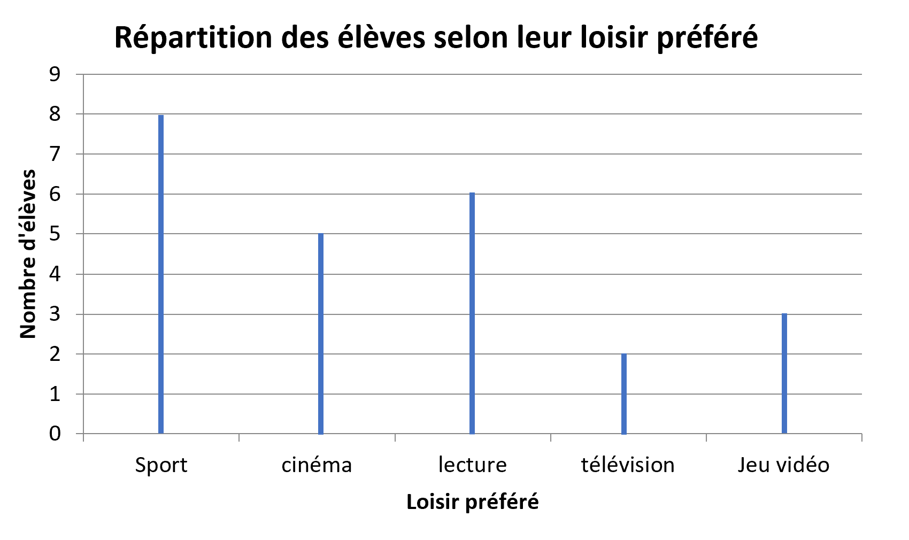
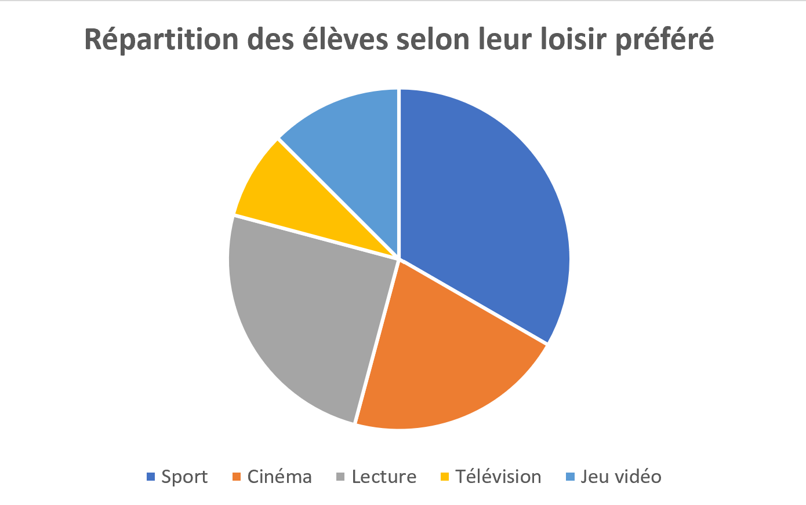
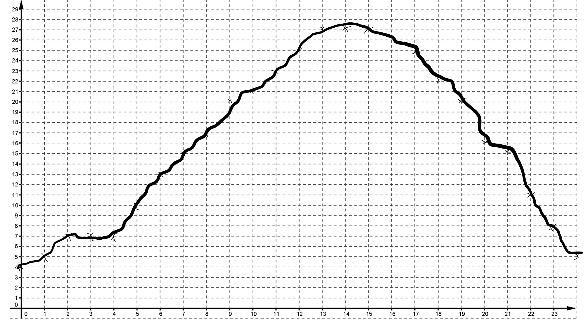

Chapitre 4 : Statistiques et Organisation de données
I. Introduction aux statistiques
Fred veut connaître les loisirs préférés de ses camarades de classe. Il fait une petite enquête auprès de ses 24 camarades et demande à chacun de noter sur un bout de papier son activité préférée.

Sans le savoir, Fred va réaliser une étude statistique :
Il a rassemblé des données et va les exploiter, c'est à dire qu'il va les présenter autrement pour les utiliser plus facilement.
II. Utilisation de tableaux
1) Tableau à simple entrée
C'est un tableau qui comporte deux lignes, on l'utilise lorsque l'on étudie un seul phénomène.
C'est un tableau qui comporte deux lignes, on l'utilise lorsque l'on étudie un seul phénomène.
A partir de l'exemple précédent on peut réaliser le tableau suivant :
| Loisir préféré | Sport | Cinéma | Lecture | Télévision | Jeu vidéo | Total |
|---|---|---|---|---|---|---|
| Effectif | 8 | 5 | 6 | 2 | 3 | 24 |
L'effectif est ici le nombre d'élèves ayant la lecture comme loisir préféré, ils sont 6 dans cette classe.
2) Tableau à double entrée
On utilise un tableau à double entrée lorsque l'on étudie deux phénomènes en même temps.
Fred a décidé de séparer les réponses des filles et des garçons, il réalise donc une étude statistique avec deux phénomènes : le loisir préféré et le sexe de la personne qui répond.
Il obtient le tableau suivant :
| Loisir préféré | |||||
|---|---|---|---|---|---|
| Sexe | Sport | Cinéma | Lecture | Télévision | Jeu vidéo |
| Fille | 4 | 2 | 4 | 0 | 1 |
| Garçon | 4 | 3 | 2 | 2 | 2 |
| Total | 8 | 5 | 6 | 2 | 3 |
Grâce à ce tableau à double entrée on peut dire que :
8 élèves de la classe préfèrent le sport.
Il y a autant de filles que de garçons qui préfèrent le sport.
2 garçons de la classe préfèrent le jeu vidéo.
2 filles de la classe préfèrent le cinéma.
III. Représentations graphiques
1) Diagramme en bâtons
Dans un diagramme en bâtons, les hauteurs sont proportionnelles aux quantités qu'elles représentent.
À partir de l'exemple du début, on peut réaliser le diagramme en bâtons suivant :

2) Diagramme circulaire
Dans un diagramme circulaire, les angles des secteurs sont proportionnels aux quantités qu'ils représentent.
Il faut trouver la valeur des angles pour construire le diagramme circulaire :
| Loisir préféré | Sport | Cinéma | Lecture | Télévision | Jeu vidéo | Total |
|---|---|---|---|---|---|---|
| Effectif | 8 | 5 | 6 | 2 | 3 | 24 |
| Angle en degrés |
L'angle complet d'un cercle est de 360°
| Loisir préféré | Sport | Cinéma | Lecture | Télévision | Jeu vidéo | Total |
|---|---|---|---|---|---|---|
| Effectif | 8 | 5 | 6 | 2 | 3 | 24 |
| Angle en degrés | 360 |
360 ÷ 24 = 15 donc on multiplie la deuxième ligne par 15 pour obtenir la troisième.
| Loisir préféré | Sport | Cinéma | Lecture | Télévision | Jeu vidéo | Total |
|---|---|---|---|---|---|---|
| Effectif | 8 | 5 | 6 | 2 | 3 | 24 |
| Angle en degrés | 120 | 75 | 90 | 30 | 45 | 360 |

3) Courbes
Ces représentations sont utiles pour observer l'évolution d'une grandeur par rapport à une autre.
Fred a fait une nouvelle étude statistique. Il a recueilli les températures à Bourbonne toutes les heures pendant une journée. Il obtient le tableau suivant :
| Heure | 0h | 1h | 2h | 3h | 4h | 5h | 6h | 7h | 8h | 9h | 10h | 11h |
|---|---|---|---|---|---|---|---|---|---|---|---|---|
| Température en °C | 4 | 5 | 7 | 7 | 7 | 10 | 13 | 15 | 17 | 20 | 21 | 23 |
| Heure | 12h | 13h | 14h | 15h | 16h | 17h | 18h | 19h | 20h | 21h | 22h | 23h |
|---|---|---|---|---|---|---|---|---|---|---|---|---|
| Température en °C | 25 | 27 | 27 | 27 | 25 | 22 | 20 | 16 | 15 | 11 | 8 | 5 |
Réalisons la courbe correspondante à ce tableau.

Évolution de la température en fonction du temps à Bourbonne.